Dành cho người muốn dạy
Chưa dám dạy yoga trẻ em? Cùng cô nhìn lại một buổi học thật ở trường mầm non
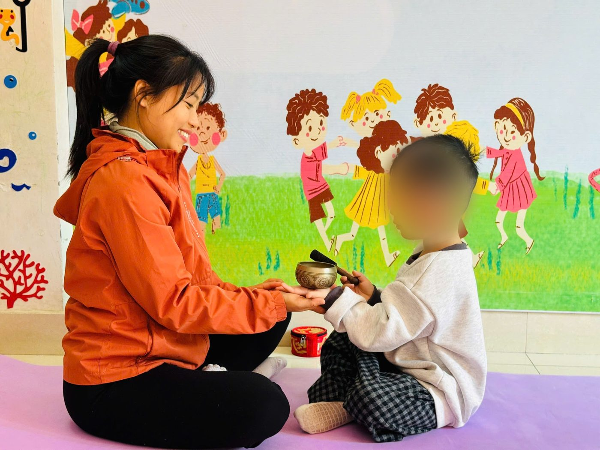
Sáng nay, trên những tấm thảm hồng
Có một bé không chịu tập. Có một bé nằm ra thảm cười mãi. Có một bé chỉ muốn được cô bế.
Đó là buổi yoga sáng nay của cô ở một trường mầm non. Các con từ khoảng một tuổi đến năm tuổi. Bé lớn đã đứng được một chân. Bé nhỏ còn chưa nói sõi. Phía sau là tấm phông lễ khai giảng vẽ những bạn nhỏ nắm tay nhau trên bãi cỏ xanh.
Cô kể lại buổi học này vì một lý do. Rất nhiều người nhắn cho Sophia những câu na ná nhau: “Em thích trẻ con lắm, nhưng em không phải giáo viên.” “Bé nhỏ thế, không nghe lời thì em dạy sao?” “Em sợ đứng trước lớp, sợ bé khóc, sợ làm bé đau.”
Những nỗi sợ ấy rất thật. Cô cũng từng có. Nhưng nhìn kỹ một buổi học thật, có lẽ bạn sẽ thấy: thứ các con cần không phải một người hoàn hảo. Mà là một người lớn bình tĩnh, biết chờ, và biết chơi.
Những nỗi sợ hay gặp nhất
Lật từng thẻ để xem điều buổi học hôm nay cho thấy.
Một buổi học thật đi như thế nào
Bấm từng chặng để đi lại buổi học sáng nay theo ảnh.
📸 Từ tiếng chuông đến lúc nằm nghỉ
1. Tiếng chuông: lời chào, không phải mệnh lệnh
Cô không bắt đầu bằng “các con ngồi ngay ngắn”. Cô bắt đầu bằng chiếc chuông xoay. Cô đỡ chuông trên lòng bàn tay, đưa dùi cho bé tự gõ. Tiếng chuông ngân lên, bé nghiêng đầu lắng nghe cho đến khi tắt hẳn.
Chỉ vậy thôi mà bé đã chuyển từ “chạy nhảy” sang “lắng nghe”. Không cần to tiếng. Tuần nào cũng mở đầu như thế, bé sẽ nhớ: nghe chuông là giờ yoga.
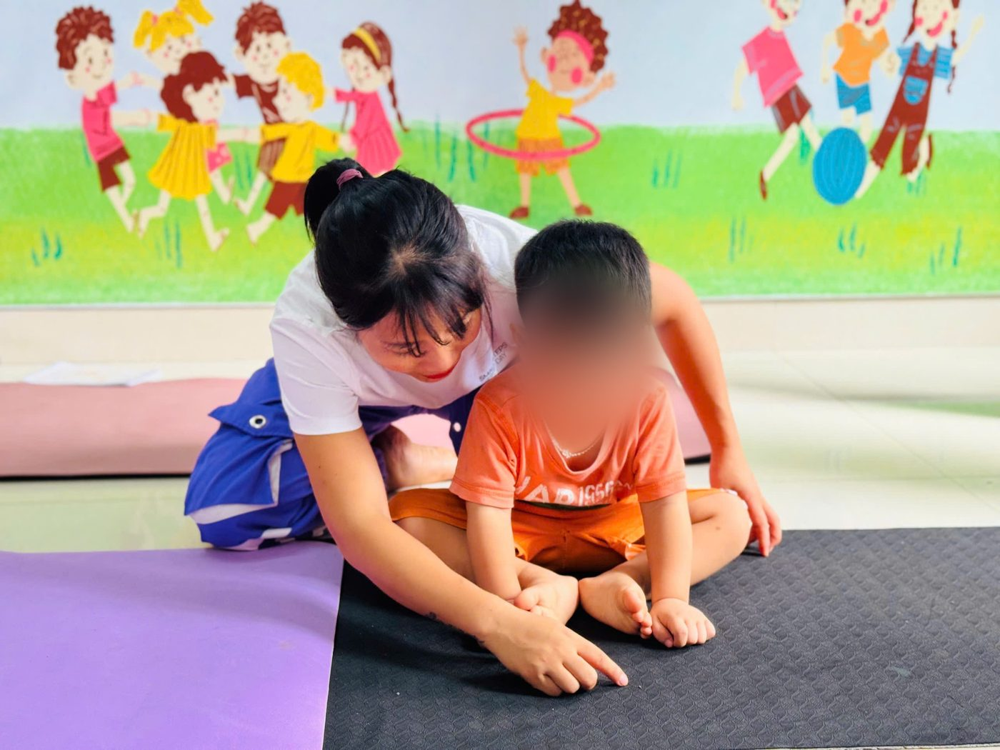
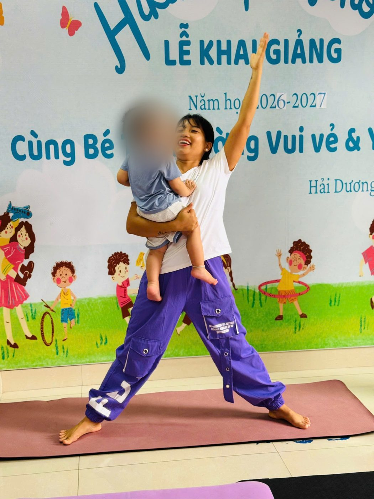
2. Ngồi gần, chạm nhẹ, cho bé thấy mình được đón
Với bạn nhỏ áo cam, cô ngồi ngay sau lưng, hai tay vòng qua, cùng nhìn xuống đôi bàn chân. “Bàn chân con đâu rồi? Chân chạm chân nào.” Bé cúi xuống tìm chân mình. Đó đã là một tư thế, mà bé không hề biết mình đang “tập”.
3. Khi bé không chịu tập
Có một bé rất nhỏ không chịu rời cô. Không chịu xuống thảm. Người mới dạy thường lo nhất cảnh này, vì cảm giác như mình đang “mất lớp”.
Cô bế bé lên. Rồi cứ thế bước chân rộng, vươn một tay lên trời, làm chiến binh với bé trên tay. Bé ngước nhìn cô, tay bám vai cô, rồi bắt đầu cười. Bé chưa làm tư thế nào cả. Nhưng bé đã ở trong buổi học, được an toàn, được vui. Lần sau bé sẽ tự xuống thảm. Có khi là lần sau nữa. Không sao.
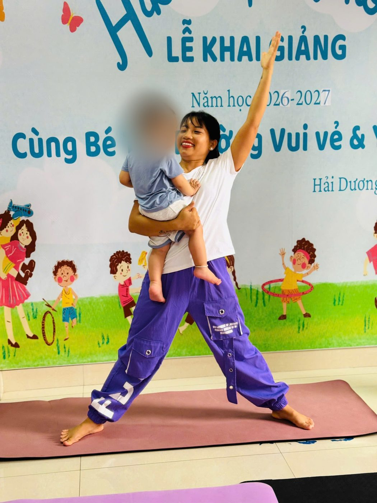
4. Gập người, chó úp mặt: bàn tay cô chỉ đặt nhẹ
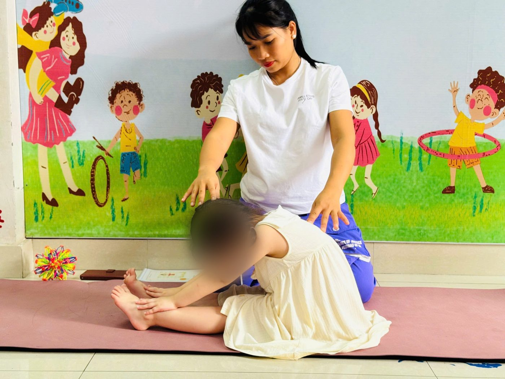
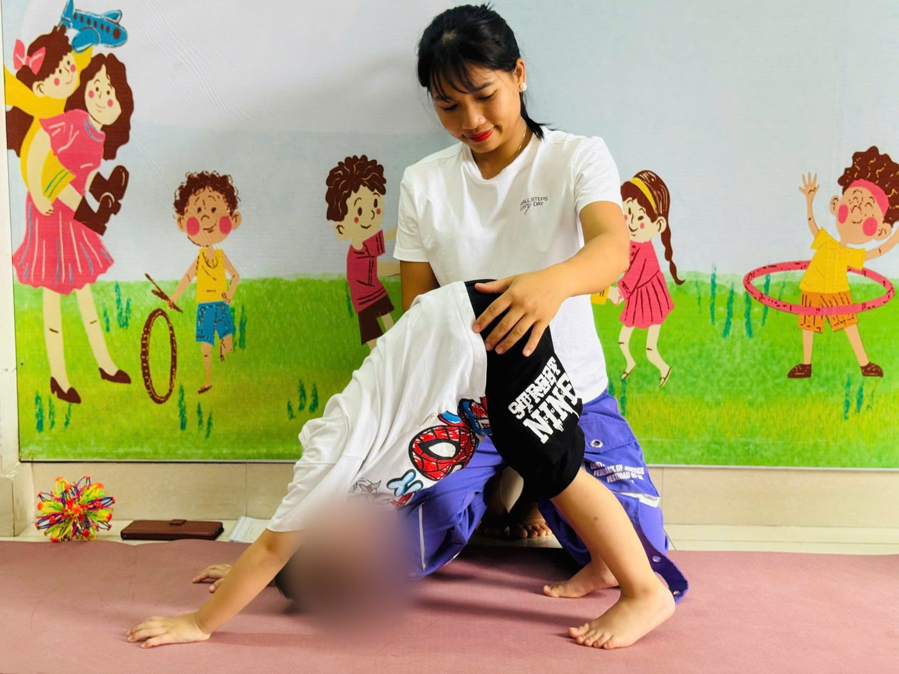
Bé gái váy trắng gập người, hai tay với về phía bàn chân. Cô quỳ phía sau, một tay đặt lên đầu bé, một tay đặt lên lưng. Không đẩy xuống. Bàn tay ấy chỉ nói: “Cô ở đây. Con thở ra nào.” Nhiều bé gập được sâu hơn một chút, đơn giản vì thấy yên tâm.
Bạn nhỏ áo người nhện chổng mông làm chó úp mặt, đầu chúi xuống thảm, mắt nhìn ngược ra sau qua hai chân. Cô đỡ nhẹ hông cho bé đứng vững. Gối co cũng được. Gót chân không chạm đất cũng được. Với bé mầm non, chó úp mặt là để vui, để thấy thế giới lộn ngược, chứ không phải để “đẹp”.
5. Đứng một chân, vặn mình: những phút bé cười nhiều nhất
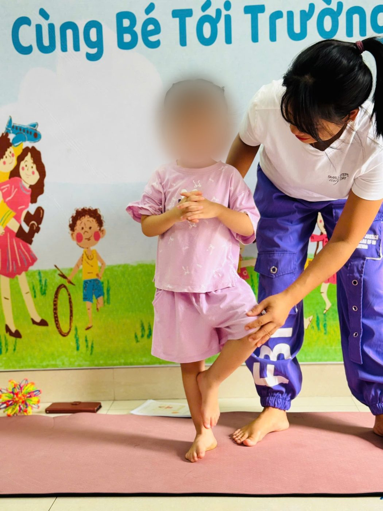
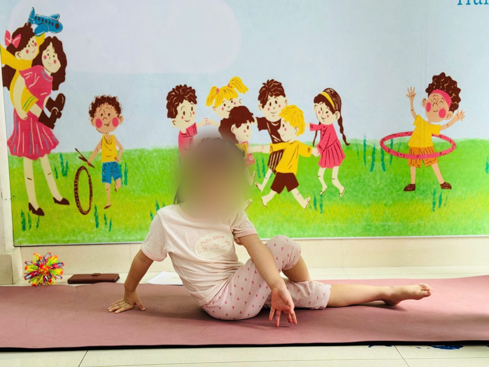
Bé áo hồng làm cây. Chân co chỉ gác lên cổ chân, chưa cần đặt lên đùi. Cô đỡ nhẹ đầu gối. Bé chắp tay, đứng được vài nhịp thở rồi lại chạm chân xuống. Mỗi lần đứng lại được, bé tự hào lắm.
Rồi bé ngồi vặn mình, quay người như ngoái lại tìm bạn. Cô đặt hai tay lên vai bé, bé ngửa cổ cười to. Lúc ấy, cô biết buổi học đang đi đúng hướng. Không phải vì tư thế đúng. Mà vì bé đang vui trong cơ thể của mình.
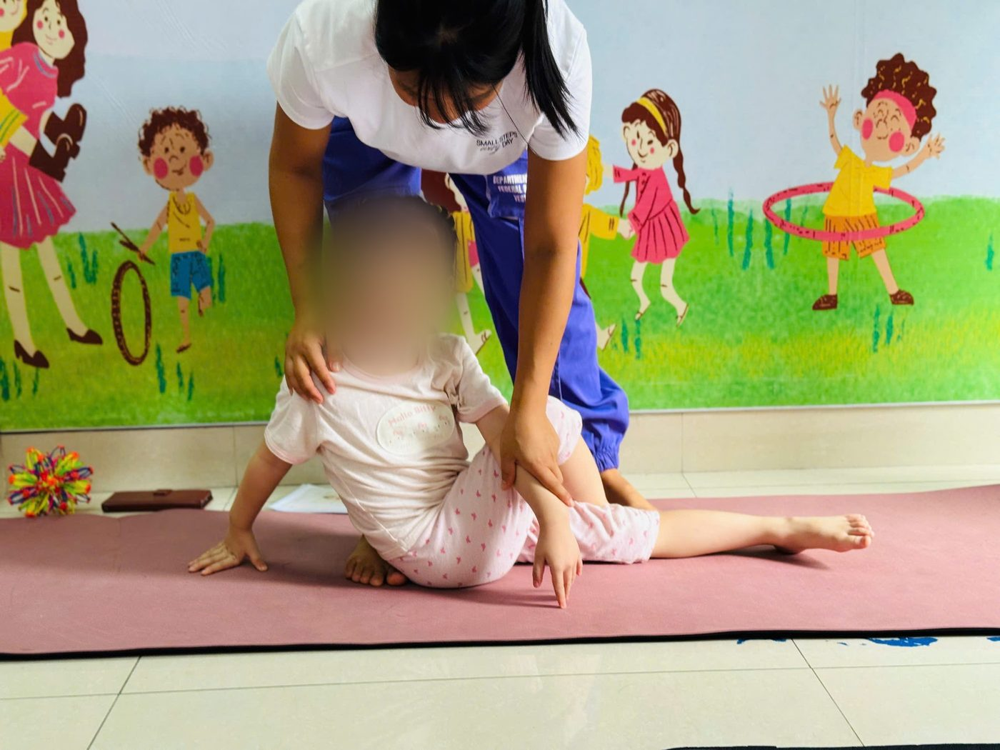
6. Nằm ra thảm: cho phép bé được là trẻ con
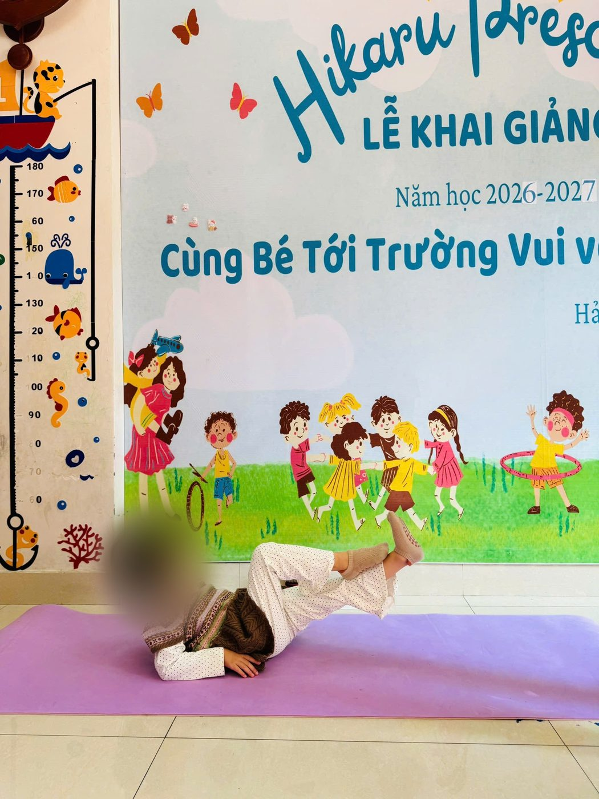
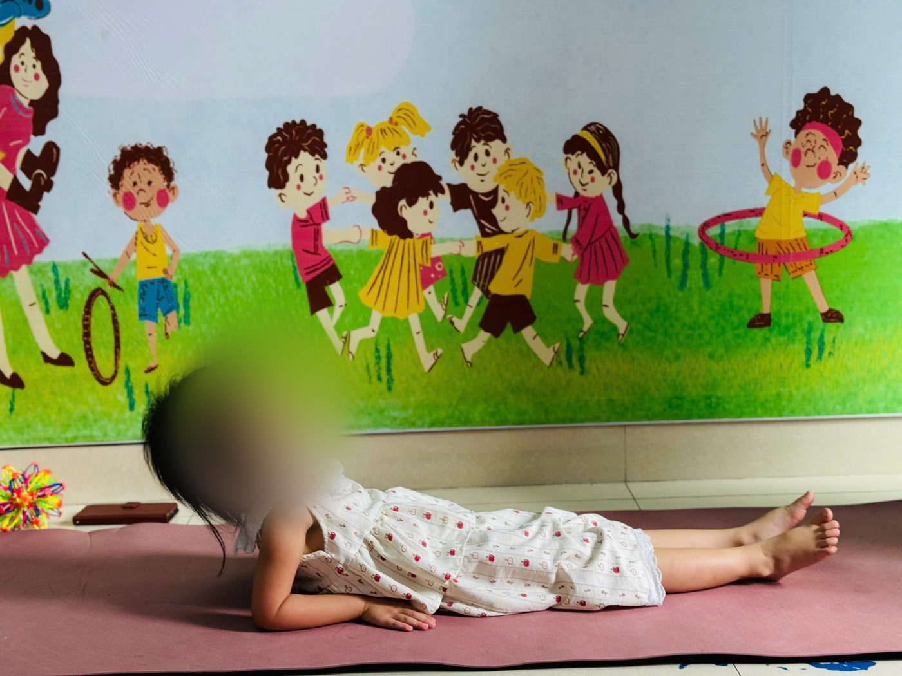
Đến giữa buổi, có bé tự nằm ra giơ hai chân lên cao. Có bé nằm ngửa, ngửa cổ nhìn tranh trên tường rồi cười khúc khích mãi. Người mới dạy hay nghĩ đây là lúc “mất kiểm soát”. Cô thì nghĩ đây là lúc bé đang tự khám phá cơ thể mình.
Cô để các con chơi một chút. Rồi gõ chuông, hoặc gọi bằng một hình ảnh: “Ai muốn làm em bé ngủ nào?” Các con thường quay về rất nhanh, vì được gọi bằng trò chơi chứ không bằng lời nhắc nhở.
7. Tư thế em bé và massage: phần các con chờ nhất
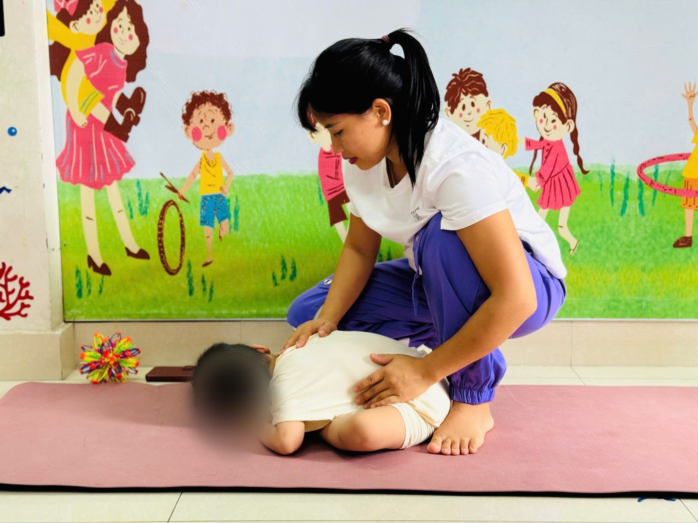
Gần cuối buổi, bé cuộn mình lại thành tư thế em bé. Cô ngồi cạnh, xoa lưng thật chậm. Rồi các con nằm ngửa, tay chân buông lỏng. Cô xoa nhẹ chân, đặt tay lên trán bé. Mắt nhắm hay mở cũng được. Đó là lúc thân thể nhỏ được nghỉ, và hơi thở chậm lại một cách tự nhiên.
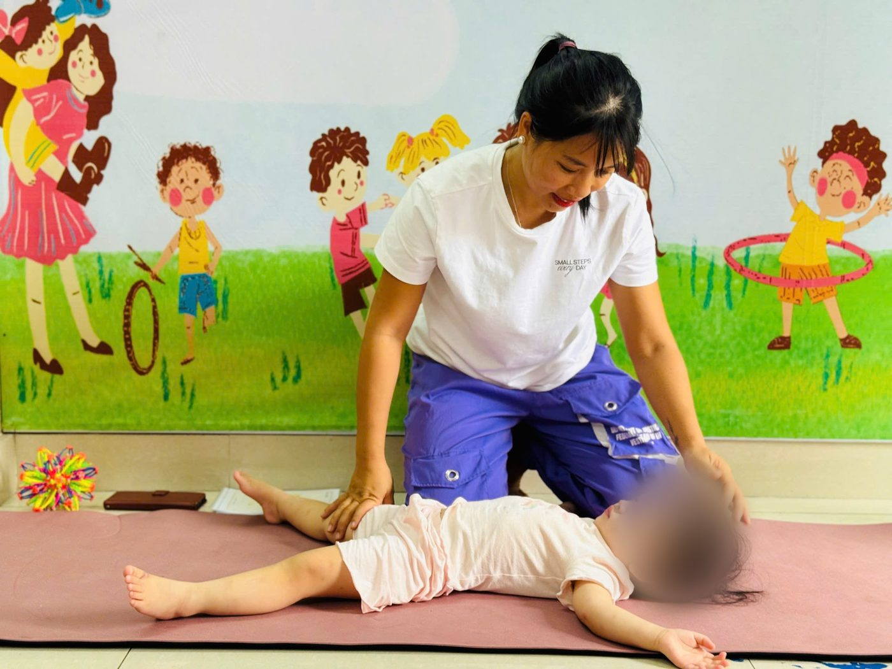
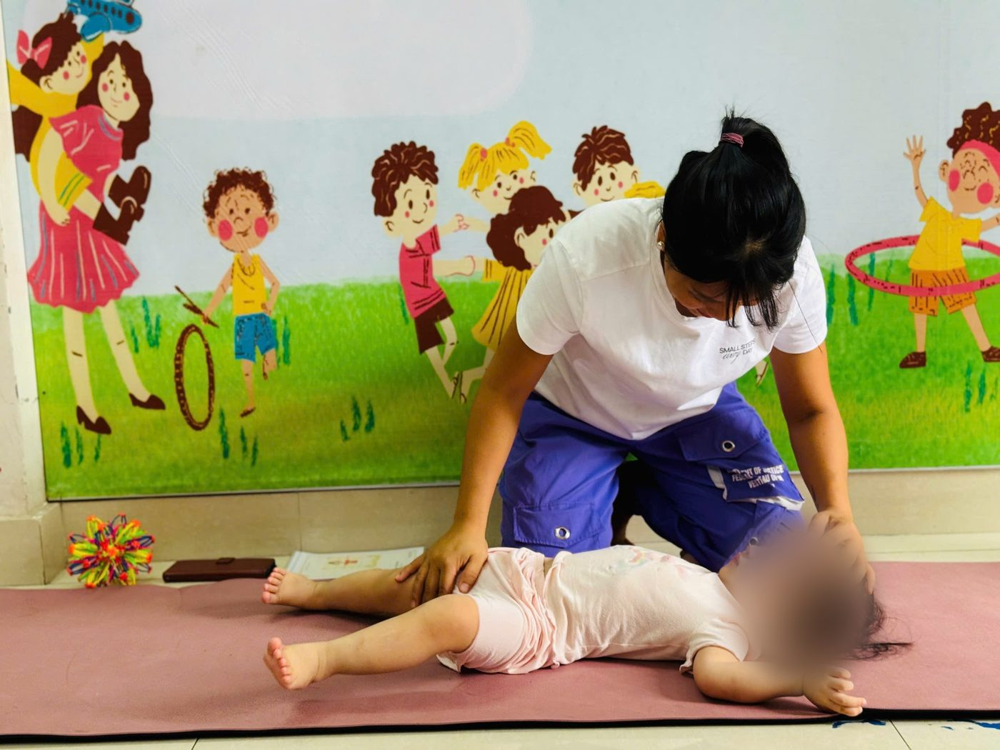
Cô luôn hỏi trước: “Cô xoa chân cho con nhé?” Bé gật thì cô xoa. Bé lắc đầu, cô ngồi cạnh thôi. Đây là cách nhỏ dạy bé rằng cơ thể của bé là của bé.
Thử làm cô giáo một phút
Bốn tình huống có thật trong lớp yoga mầm non. Bạn sẽ làm gì? Không có điểm số. Chỉ để thấy bạn đã có sẵn trực giác tốt hơn mình nghĩ.
Điều nghiên cứu nói
Yoga cho trẻ mầm non không phải phép màu. Nhưng nó có ích, và điều ấy đã được đo đạc. Năm 2015, nhóm của Rebecca Razza (Đại học Syracuse, Mỹ) theo dõi 29 bé mầm non 3 đến 5 tuổi suốt một năm học. Một lớp được cô giáo đưa yoga chánh niệm vào giờ học đều đặn, một lớp học bình thường để so sánh. Kết quả đăng trên tạp chí Journal of Child and Family Studies: các bé lớp có yoga tiến bộ rõ hơn ở cả ba khả năng tự điều chỉnh được đo là chú ý, biết chờ đợi và kiềm chế. Nhóm nghiên cứu cũng thấy một số dấu hiệu rằng những bé khó tự điều chỉnh nhất lại được lợi nhiều nhất. Đó là một nghiên cứu nhỏ, nên cô chỉ nói là “có tín hiệu tốt”, chưa phải điều chắc chắn.
WHO (2019) khuyên trẻ 3 đến 4 tuổi vận động ít nhất 180 phút mỗi ngày, trong đó có 60 phút vận động vừa đến mạnh. Một buổi yoga vui chỉ là một phần nhỏ. Nhưng nó là phần dạy bé biết dừng lại, biết thở, biết nghe cơ thể mình, giữa một ngày chạy nhảy.
Với Sophia, yoga cho bé cũng đi theo đúng hướng của yoga cân bằng phục hồi ở người lớn: gốc là hơi thở, trọng tâm là cột sống, hướng đi là cân bằng. Tư thế đơn giản, an toàn, vừa sức. Và phần lớn điều tốt nằm ngoài tấm thảm: bé ngủ đủ, ăn bữa ăn thật, được chạy chân trần trên cỏ, được ôm nhiều.
Bạn cần gì để bắt đầu?
Tự đánh dấu những điều bạn đã có. Trang sẽ nhớ trên máy của bạn.
🌱 Những điều bạn đã có
Những điều trong danh sách trên không học trong một khóa nào được. Còn những thứ học được thì rất cụ thể: cơ thể bé theo từng độ tuổi và điều cần tránh, cách dựng một buổi học từ tiếng chuông đến lúc nằm nghỉ, cách biến tư thế thành câu chuyện và trò chơi, các bài thở ngắn, cách giữ lớp vui mà vẫn có nề nếp, cách nói chuyện với bố mẹ và nhà trường.
Cô cũng nói thật: học xong một khóa 30 giờ, bạn chưa thành chuyên gia ngay. Mười buổi đầu sẽ còn lúng túng. Nhưng bạn sẽ bước vào lớp với một trình tự rõ ràng trong đầu, biết mình làm gì khi bé khóc, khi bé chạy, khi bé chỉ muốn được bế. Sự tự tin đến từ đó.
Điều đọng lại sau buổi học
Ra về, cô nhớ nhất không phải tư thế nào đẹp. Cô nhớ bé gõ chuông rồi nghiêng đầu nghe. Nhớ bé được bế vươn tay lên trời rồi cười. Nhớ bé nằm nghỉ, hơi thở chậm dần dưới bàn tay cô.
Nếu bạn đã đọc đến đây, có lẽ trong bạn cũng có một người muốn ngồi xuống thảm cùng các con. Đừng đợi đến lúc hết sợ. Cứ học, rồi bắt đầu từ một lớp nhỏ.
Hít vào tâm tĩnh lặng. Thở ra miệng mỉm cười.
🌿 Muốn tự tay dẫn những buổi học như thế này?
Khóa Đào tạo Huấn luyện viên Yoga trẻ em 30 giờ của Sophia dành cho cả người chưa từng đứng lớp: giáo viên mầm non, HLV yoga, giáo viên tiếng Anh, bố mẹ. Học online qua Zoom trực tiếp cùng cô 8.000.000đ, được góp ý khi thực hành dạy. Hoặc học qua video quay sẵn 3.690.000đ, xem lại bao nhiêu lần cũng được. Còn băn khoăn mình có hợp không, cứ nhắn cô.
Đọc thêm: Kỹ năng đứng lớp yoga trẻ em, Giao tiếp với trẻ trong lớp yoga và Yoga cho bé 16 tháng đến 2,5 tuổi.
📚 Tài liệu tham khảo
- Razza RA, Bergen-Cico D, Raymond K. Enhancing preschoolers’ self-regulation via mindful yoga. Journal of Child and Family Studies, 2015;24:372–385.
- World Health Organization. Guidelines on physical activity, sedentary behaviour and sleep for children under 5 years of age. Geneva: WHO, 2019.